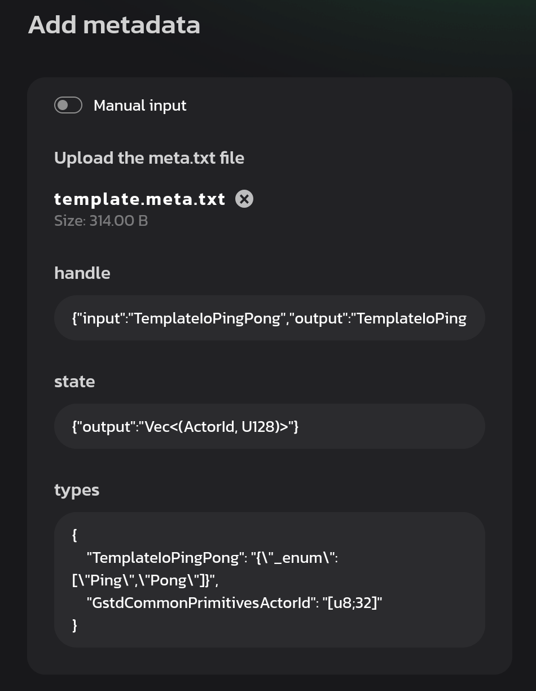
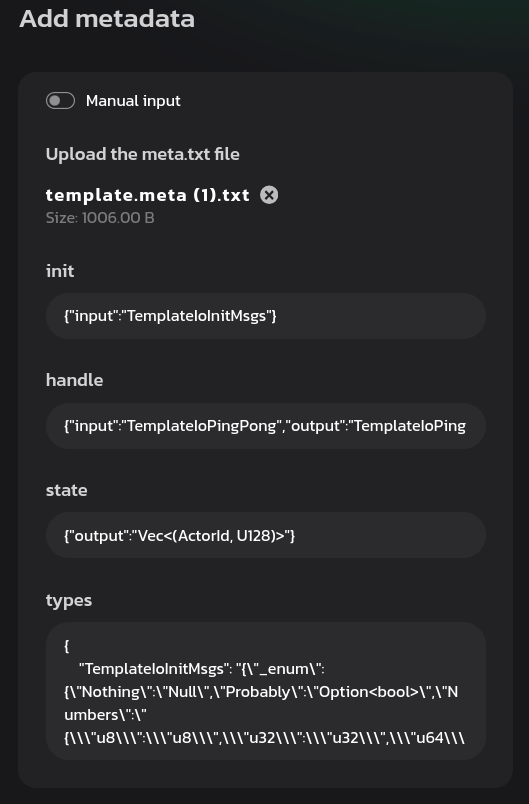

<!DOCTYPE html>
<html lang="en">

<head>
  <meta charset="utf-8" />
  <meta name="viewport" content="width=device-width, initial-scale=1.0, maximum-scale=1.0, user-scalable=no" />

  <title>Metadata</title>
  <link rel="icon" href="./../../assets/favicon.svg" />
  <link rel="shortcut icon" href="./../../assets/favicon.png" />
  <link rel="stylesheet" href="./../../dist/reset.css" />
  <link rel="stylesheet" href="./../../dist/reveal.css" />
  <link rel="stylesheet" href="./../.././assets/styles/PBA-theme.css" id="theme" />
  <link rel="stylesheet" href="./../../css/highlight/shades-of-purple.css" />

  <link rel="stylesheet" href="./../.././assets/styles/custom-classes.css" />

</head>

<body class="site">
  <header class="site-header">
    <!-- This logo is a link only on the watching server, not the production build -->
    <a href="">
      
    </a>
  </header>
  <main class="reveal">
    <article class="slides">
      <section  data-markdown><script type="text/template">

# Metadata
</script></section><section  data-markdown><script type="text/template">


https://github.com/varazone/template
</script></section><section  data-markdown><script type="text/template">

`./io/src/lib.rs`

```rust
/// `()` means the contract doesn't process & reply messages at the above 
/// written entry point or doesn't implement it.
impl Metadata for ContractMetadata {
    /// I/O types for the `init()` entry point.
    type Init = ();
    /// I/O types for the `handle()` entry point.
    /// Here the [`PingPong`] type is used for both incoming and outgoing messages.
    type Handle = InOut<PingPong, PingPong>;
    /// Types for miscellaneous scenarios.
    type Others = ();
    /// The input type for the `handle_reply()` entry point.
    type Reply = ();
    /// The output type for the `handle_signal()` entry point.
    type Signal = ();
    /// I/O types for the `state()` entry point.
    /// You can also specify just an output ([`Out`]) or input ([`In`](gmeta::In)) type,
    /// if both ([`InOut`]) are expected like here.
    type State = Out<State>;
}
```
</script></section><section  data-markdown><script type="text/template">
```rust
/// Replies with [`Pong`](PingPong::Pong) if received [`Ping`](PingPong::Ping).
#[derive(Encode, Decode, TypeInfo, Debug, PartialEq, Eq)]
pub enum PingPong {
    Ping,
    Pong,
}
```
</script></section><section  data-markdown><script type="text/template">
Demo: Custom Init Message

```
#[derive(Encode, Decode, TypeInfo, Debug, PartialEq, Eq)]
pub enum InitMsgs {
    Nothing,
    Probably(Option<bool>),
    Numbers {
        u8: u8,
        u32: u32,
        u64: u64,
        u128: u128,
    },
    Struct {
        name: String,
        vector: Vec<u8>,
        slice: [u8; 4],
        address: ActorId,
    },
    Tuple (String, Vec<u8>, [u8; 4], ActorId),
}
```
</script></section><section  data-markdown><script type="text/template">
<br/>

<pba-cols>

<pba-col>

Before



</pba-col>

<pba-col>

After



</pba-col>

</pba-cols>

https://idea.gear-tech.io/programs/upload

<!--

<aside class="notes"><pre><code>#[derive(Encode, Decode, TypeInfo, Debug, PartialEq, Eq)]
#[codec(crate = gstd::codec)]
#[scale_info(crate = gstd::scale_info)]
pub enum Init {
    Numbers {
        u8: u8,
        u32: u32,
        u64: u64,
        u128: u128,
    },
    Struct {
        name: String,
        vector: Vec&lt;u8&gt;,
        slice: [u8; 4],
        address: ActorId,
    },
    Tuple (String, Vec&lt;u8&gt;, [u8; 4], ActorId),
}

/// `()` means the contract doesn&#39;t process &amp; reply messages at the above written entry point or
/// doesn&#39;t implement it.
impl Metadata for ContractMetadata {
    /// I/O types for the `init()` entry point.
    type Init = InOut&lt;Init, ()&gt;;
</code></pre>
<p>build.rs WithMetadata</p>
<p>sails 的 idl 做法</p>
<p>--&gt;</p>
</aside></script></section>
    </article>
  </main>

  <script src="./../../dist/reveal.js"></script>

  <script src="./../../plugin/markdown/markdown.js"></script>
  <script src="./../../plugin/highlight/highlight.js"></script>
  <script src="./../../plugin/zoom/zoom.js"></script>
  <script src="./../../plugin/notes/notes.js"></script>
  <script src="./../../plugin/math/math.js"></script>

  <script src="./../../assets/plugin/mermaid.js"></script>
  <script src="./../../assets/plugin/mermaid-theme.js"></script>

  <script src="./../../assets/plugin/chart/chart.js"></script>
  <script src="./../../assets/plugin/chart/chart.min.js"></script>

  <script src="./../../assets/plugin/tailwindcss.min.js"></script>

  <script>
    function extend() {
      var target = {};
      for (var i = 0; i < arguments.length; i++) {
        var source = arguments[i];
        for (var key in source) {
          if (source.hasOwnProperty(key)) {
            target[key] = source[key];
          }
        }
      }
      return target;
    }

    // default options to init reveal.js
    var defaultOptions = {
      controls: true,
      progress: true,
      history: true,
      center: true,
      transition: 'default', // none/fade/slide/convex/concave/zoom
      slideNumber: true,
      mermaid: {
        startOnLoad: false,
        logLevel: 3,
        theme: 'base',
        themeVariables: {
          primaryColor: purple,
          primaryTextColor: white,
          primaryBorderColor: pink,
          lineColor: pink,
          secondaryColor: lightPurple,
          tertiaryColor: lightPurple,
        },
      },
      chart: {
        defaults: {
          color: 'lightgray', // color of labels
          scale: {
            beginAtZero: true,
            ticks: { stepSize: 1 },
            grid: { color: "lightgray" }, // color of grid lines
          },
        },
        line: { borderColor: ["#ccc", "#E6007A", "#6D3AEE"], "borderDash": [[5, 10], [0, 0]] },
        bar: { backgroundColor: ["#ccc", "#E6007A", "#6D3AEE"] },
      },
      plugins: [
        RevealMarkdown,
        RevealHighlight,
        RevealZoom,
        RevealNotes,
        RevealMath,
        RevealMermaid,
        RevealChart
      ]
    };

    // options from URL query string
    var queryOptions = Reveal().getQueryHash() || {};

    var options = extend(defaultOptions, {"width":1500,"height":900,"margin":0,"minScale":0.2,"maxScale":2,"transition":"none","controls":false,"progress":true,"center":true,"slideNumber":false,"backgroundTransition":"fade"}, queryOptions);
  </script>


  <script>
    Reveal.initialize(options);
  </script>
</body>

</html>
